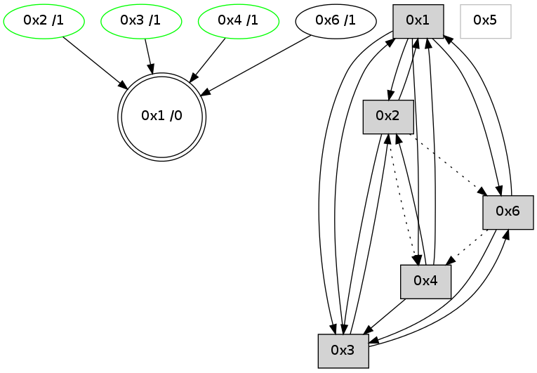

>> << IDX [start] -100 -25 -5 +0 +5 +25 +100 [695.006369114]
 Previous packets
----------------------------------------------------------------------
690.085280 beacon01(adaf) #0 coord=01,02,05,03,04,06 cycle=432.0ms assoc
-- color-indic=0 64 cc 9c
690.095241 beacon02(adaf) #0 coord=01,02,05,03,04,06 cycle=432.0ms assoc 64 9d 63
690.105242 beacon05(adaf) #0 coord=01,02,05,03,04,06 cycle=432.0ms assoc 64 3b 49
690.115240 beacon03(adaf) #0 coord=01,02,05,03,04,06 cycle=432.0ms assoc 64 a7 6d
690.125242 beacon04(adaf) #0 coord=01,02,05,03,04,06 cycle=432.0ms assoc 64 01 47
690.135242 beacon06(adaf) #0 coord=01,02,05,03,04,06 cycle=432.0ms assoc 64 75 5b
690.146932 [Hello(4): seq=492 sym=2,3,1 sysInfo= stat=2:0,0,0,0/3:0,0,6,2/1:9,0,1,0]
690.153240 [Hello(1): seq=391 sym=2,4,3,6 sysInfo= stat=2:14,0,7,2/4:1,0,1,1/3:2,0,1,1/6:4,0,5,0]
----------------------------------------------------------------------
690.577387 beacon01(adaf) #0 coord=01,02,05,03,04,06 cycle=432.0ms assoc
-- color-indic=0 64 08 f3
690.587349 beacon02(adaf) #0 coord=01,02,05,03,04,06 cycle=432.0ms assoc 64 59 0c
690.597349 beacon05(adaf) #0 coord=01,02,05,03,04,06 cycle=432.0ms assoc 64 ff 26
690.607350 beacon03(adaf) #0 coord=01,02,05,03,04,06 cycle=432.0ms assoc 64 63 02
690.617348 beacon04(adaf) #0 coord=01,02,05,03,04,06 cycle=432.0ms assoc 64 c5 28
690.627349 beacon06(adaf) #0 coord=01,02,05,03,04,06 cycle=432.0ms assoc 64 b1 34
690.639063 [Hello(3): seq=491 sym=4,2,1,6 sysInfo= stat=4:1,0,1,1/2:0,0,0,0/1:9,0,13,0/6:6,0,8,0]
690.642010 [STC(1) #0.21 to-color d=0]
----------------------------------------------------------------------
691.069496 beacon01(adaf) #0 coord=01,02,05,03,04,06 cycle=432.0ms assoc
-- color-indic=0 64 56 92
691.079458 beacon02(adaf) #0 coord=01,02,05,03,04,06 cycle=432.0ms assoc 64 07 6d
691.089458 beacon05(adaf) #0 coord=01,02,05,03,04,06 cycle=432.0ms assoc 64 a1 47
691.099458 beacon03(adaf) #0 coord=01,02,05,03,04,06 cycle=432.0ms assoc 64 3d 63
691.109457 beacon04(adaf) #0 coord=01,02,05,03,04,06 cycle=432.0ms assoc 64 9b 49
691.119458 beacon06(adaf) #0 coord=01,02,05,03,04,06 cycle=432.0ms assoc 64 ef 55
691.130269 [Hello(1): seq=392 sym=2,4,3,6 sysInfo= stat=2:14,0,7,2/4:1,0,1,1/3:2,0,1,1/6:4,0,5,0]
691.132949 [Hello(4): seq=493 sym=2,3,1 sysInfo= stat=2:0,0,0,0/3:1,0,6,2/1:10,0,2,0]
691.134898 [STC(3)->1 #0.21 stable,to-color d=1]
691.136147 [STC(2)->1 #0.21 stable,to-color d=1]
691.137699 [STC(4)->1 #0.21 stable,to-color d=1]
691.139201 [TreeStatus(3)-.->1 #0.21 stable child=1]
691.141056 [TreeStatus(4)-.->1 #0.21 stable child=1]
691.143051 [TreeStatus(2)-.->1 #0.21 stable child=1]
691.147415 [STC(6)->1 #0.21 to-color d=1]
----------------------------------------------------------------------
691.561604 beacon01(adaf) #0 coord=01,02,05,03,04,06 cycle=432.0ms assoc
-- color-indic=0 64 92 fd
691.571566 beacon02(adaf) #0 coord=01,02,05,03,04,06 cycle=432.0ms assoc 64 c3 02
691.581566 beacon05(adaf) #0 coord=01,02,05,03,04,06 cycle=432.0ms assoc 64 65 28
691.591566 beacon03(adaf) #0 coord=01,02,05,03,04,06 cycle=432.0ms assoc 64 f9 0c
691.601566 beacon04(adaf) #0 coord=01,02,05,03,04,06 cycle=432.0ms assoc 64 5f 26
691.611567 beacon06(adaf) #0 coord=01,02,05,03,04,06 cycle=432.0ms assoc 64 2b 3a
691.623270 [Hello(3): seq=492 sym=4,2,1,6 sysInfo= stat=4:1,0,1,2/2:0,0,1,1/1:9,0,14,0/6:6,0,9,0]
----------------------------------------------------------------------
692.053712 beacon01(adaf) #0 coord=01,02,05,03,04,06 cycle=432.0ms assoc
-- color-indic=0 64 de 4d
692.063673 beacon02(adaf) #0 coord=01,02,05,03,04,06 cycle=432.0ms assoc 64 8f b2
692.073673 beacon05(adaf) #0 coord=01,02,05,03,04,06 cycle=432.0ms assoc 64 29 98
692.083674 beacon03(adaf) #0 coord=01,02,05,03,04,06 cycle=432.0ms assoc 64 b5 bc
692.093674 beacon04(adaf) #0 coord=01,02,05,03,04,06 cycle=432.0ms assoc 64 13 96
692.103674 beacon06(adaf) #0 coord=01,02,05,03,04,06 cycle=432.0ms assoc 64 67 8a
692.115344 [Hello(4): seq=494 sym=2,3,1 sysInfo= stat=2:0,0,0,1/3:2,0,6,2/1:11,0,2,0]
692.119063 [Hello(2): seq=986 sym=6,1,3 asym=4 sysInfo= stat=6:11,0,4,0/1:9,0,0,0/3:3,0,0,1/4:1,0,1,1]
692.123411 [Hello(1): seq=393 sym=2,4,3,6 sysInfo= stat=2:14,0,8,3/4:1,0,2,2/3:3,0,2,2/6:4,0,6,0]
----------------------------------------------------------------------
692.545820 beacon01(adaf) #0 coord=01,02,05,03,04,06 cycle=432.0ms assoc
-- color-indic=0 64 1a 22
692.555784 beacon02(adaf) #0 coord=01,02,05,03,04,06 cycle=432.0ms assoc 64 4b dd
692.565782 beacon05(adaf) #0 coord=01,02,05,03,04,06 cycle=432.0ms assoc 64 ed f7
692.575782 beacon03(adaf) #0 coord=01,02,05,03,04,06 cycle=432.0ms assoc 64 71 d3
692.585782 beacon04(adaf) #0 coord=01,02,05,03,04,06 cycle=432.0ms assoc 64 d7 f9
692.595782 beacon06(adaf) #0 coord=01,02,05,03,04,06 cycle=432.0ms assoc 64 a3 e5
692.607469 [Hello(3): seq=493 sym=4,2,1,6 sysInfo= stat=4:1,0,1,2/2:1,0,1,1/1:10,0,14,0/6:7,0,9,0]
----------------------------------------------------------------------
693.037931 beacon01(adaf) #0 coord=01,02,05,03,04,06 cycle=432.0ms assoc
-- color-indic=0 64 57 25
693.047892 beacon02(adaf) #0 coord=01,02,05,03,04,06 cycle=432.0ms assoc 64 06 da
693.057893 beacon05(adaf) #0 coord=01,02,05,03,04,06 cycle=432.0ms assoc 64 a0 f0
693.067892 beacon03(adaf) #0 coord=01,02,05,03,04,06 cycle=432.0ms assoc 64 3c d4
693.077893 beacon04(adaf) #0 coord=01,02,05,03,04,06 cycle=432.0ms assoc 64 9a fe
693.087893 beacon06(adaf) #0 coord=01,02,05,03,04,06 cycle=432.0ms assoc 64 ee e2
693.099572 [Hello(4): seq=495 sym=2,3,1 sysInfo= stat=2:1,0,0,1/3:3,0,6,2/1:12,0,2,0]
693.103317 [Hello(2): seq=987 sym=1,3 asym=6,4 sysInfo= stat=1:10,0,0,0/3:4,0,0,1/6:11,0,4,0/4:1,0,1,1]
693.105184 [Hello(1): seq=394 sym=2,4,3,6 sysInfo= stat=2:14,0,8,3/4:1,0,2,2/3:4,0,2,2/6:4,0,6,0]
693.109603 [STC(1) #0.22 to-color d=0]
----------------------------------------------------------------------
693.530041 beacon01(adaf) #0 coord=01,02,05,03,04,06 cycle=432.0ms assoc
-- color-indic=0 64 93 4a
693.540002 beacon02(adaf) #0 coord=01,02,05,03,04,06 cycle=432.0ms assoc 64 c2 b5
693.550002 beacon05(adaf) #0 coord=01,02,05,03,04,06 cycle=432.0ms assoc 64 64 9f
693.560003 beacon03(adaf) #0 coord=01,02,05,03,04,06 cycle=432.0ms assoc 64 f8 bb
693.570004 beacon04(adaf) #0 coord=01,02,05,03,04,06 cycle=432.0ms assoc 64 5e 91
693.580005 beacon06(adaf) #0 coord=01,02,05,03,04,06 cycle=432.0ms assoc 64 2a 8d
693.591546 [STC(6)->1 #0.22 to-color d=1]
693.595439 [STC(4)->1 #0.22 stable,to-color d=1]
693.597552 [Hello(3): seq=494 sym=4,2,1,6 sysInfo= stat=4:1,0,1,2/2:2,0,1,1/1:11,0,15,0/6:8,0,9,0]
693.600678 [STC(3)->1 #0.22 stable,to-color d=1]
693.602314 [TreeStatus(4)-.->1 #0.22 stable child=1]
693.606302 [TreeStatus(3)-.->1 #0.22 stable child=1]
----------------------------------------------------------------------
694.022150 beacon01(adaf) #0 coord=01,02,05,03,04,06 cycle=432.0ms assoc
-- color-indic=0 64 df fa
694.032111 beacon02(adaf) #0 coord=01,02,05,03,04,06 cycle=432.0ms assoc 64 8e 05
694.042111 beacon05(adaf) #0 coord=01,02,05,03,04,06 cycle=432.0ms assoc 64 28 2f
694.052111 beacon03(adaf) #0 coord=01,02,05,03,04,06 cycle=432.0ms assoc 64 b4 0b
694.062112 beacon04(adaf) #0 coord=01,02,05,03,04,06 cycle=432.0ms assoc 64 12 21
694.072112 beacon06(adaf) #0 coord=01,02,05,03,04,06 cycle=432.0ms assoc 64 66 3d
694.083783 [Hello(4): seq=496 sym=2,3,1 sysInfo= stat=2:2,0,0,1/3:3,0,6,3/1:13,0,3,0]
694.087506 [Hello(2): seq=988 sym=1,3 asym=6,4 sysInfo= stat=1:11,0,1,0/3:4,0,0,2/6:11,0,4,0/4:1,0,1,1]
694.089466 [Hello(1): seq=395 sym=2,4,3,6 sysInfo= stat=2:14,0,9,4/4:1,0,2,2/3:5,0,3,3/6:4,0,7,0]
----------------------------------------------------------------------
694.514260 beacon01(adaf) #0 coord=01,02,05,03,04,06 cycle=432.0ms assoc
-- color-indic=0 64 1b 95
694.524221 beacon02(adaf) #0 coord=01,02,05,03,04,06 cycle=432.0ms assoc 64 4a 6a
694.534222 beacon05(adaf) #0 coord=01,02,05,03,04,06 cycle=432.0ms assoc 64 ec 40
694.544222 beacon03(adaf) #0 coord=01,02,05,03,04,06 cycle=432.0ms assoc 64 70 64
694.554222 beacon04(adaf) #0 coord=01,02,05,03,04,06 cycle=432.0ms assoc 64 d6 4e
694.564224 beacon06(adaf) #0 coord=01,02,05,03,04,06 cycle=432.0ms assoc 64 a2 52
694.575952 [Hello(3): seq=495 sym=2,1,6 sysInfo= stat=2:3,0,1,1/1:12,0,15,0/6:9,0,9,0]